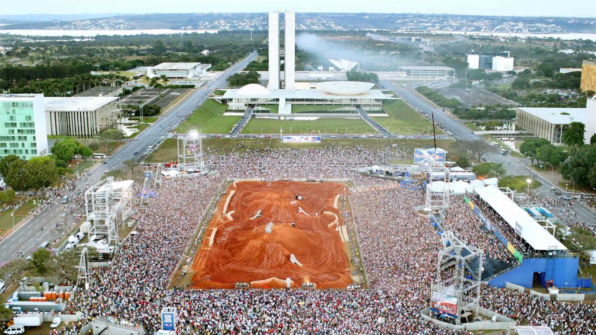
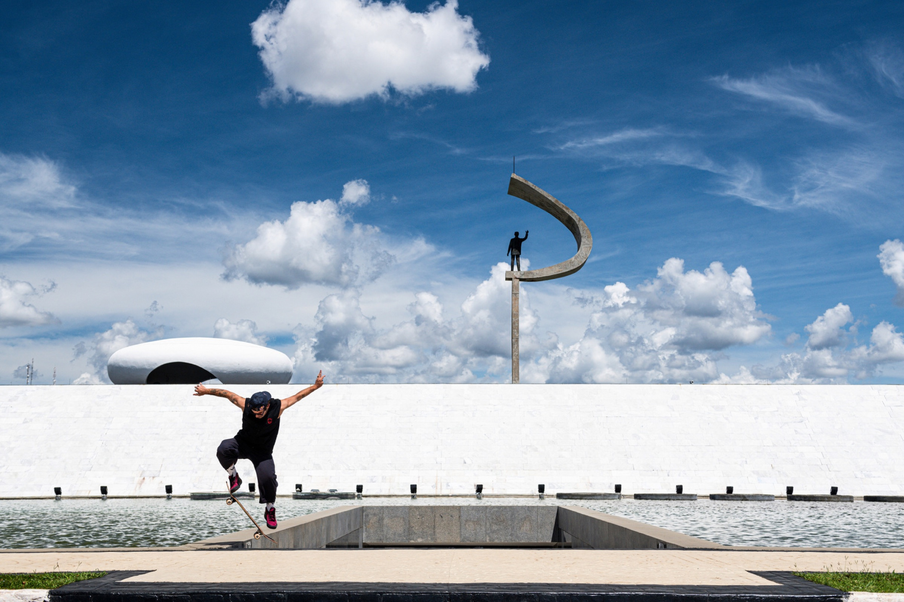

Let's makea difference.
Toda grande marca carrega este conceito.
Somos especializados em conectar marcas e pessoas através da técnica, arte e ciência, explorando todos os sentidos do ser humano para gerar ações inesquecíveis.

Esporte, conteúdo
e experiência.
A YOUP é uma agência de esporte e entretenimento. Nasceu digital, especializada em esportes, incorporou a produção de eventos ao DNA e hoje é uma das principais agências de esportes de ação do país. Produção de eventos, live marketing e brand experience: é isso que a gente faz, do conceito à operação em campo.
A casa fica em São Bernardo do Campo. A operação acontece onde o projeto pedir, de uma praça em São Paulo a uma cidade de palafitas no Marajó.

Ver, ouvir
e sentir.
Não é slogan, é a ordem de trabalho. Ver é o conteúdo que fica depois que o evento acaba. Ouvir é a experiência ao vivo, onde a marca não só se manifesta, ela escuta. Sentir é entender o que a marca precisa transmitir antes de qualquer entrega, e construir o projeto a partir daí.
São três entradas para o mesmo lugar: fazer a marca ser lembrada.
A história ano a anoDo briefing
ao impossível
Três frentes, uma operação só. Cada uma resolve um pedaço do que a marca precisa dizer.